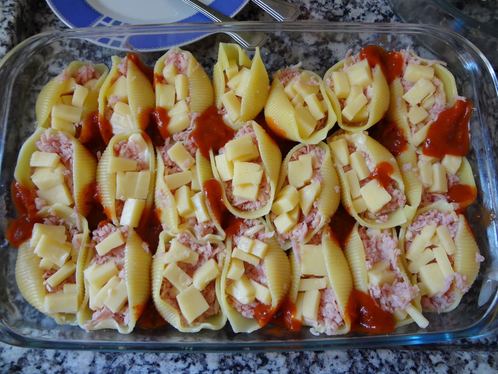

Receita 5 - Conchiglione recheado com queijo
Minha opinião
Já experimentei?: Não
Consideração: É uma receita gourmet um pouco complicada de se fazer, principalmente por conta dos ingredientes específicos. Todavia, eu gosto bastante de massa e queijo, e por isso isso, juntando com os outros ingredientes da receita, tenho certeza que deve ter um gosto magnífico.
Com quem eu provaria esse prato?

Dwayne Johnson
Apesar de ele precisar comer muita proteína pra manter os músculos, uma massa de vez em quando não faz mal, né?
Receita
Ingredientes
- 1 xícara (chá) de queijo parmesão ralado
- 1 xícara (chá) de queijo prato ralado
- 300 gramas de ricota desfeita com garfo
- 4 colheres (sopa) de requeijão cremoso
- 1/2 xícara (chá) de creme de leite
- 40 vieira (conchas) cozidas al dente
- 2 colheres (sopa) de óleo
- 2 dentes de alho picados
- 2 latas de molho de tomate pelado
- 1/2 colher (sopa) de orégano
- 1/2 colher (sopa) de manjericão fresco picado
- 1/2 colher (sopa) de tomilho fresco picado
- 1/2 xícara (chá) de Água quente
- sal a gosto
- noz-moscada ralada a gosto
- pimenta a gosto
Modo de preparo
Passo 1 - Aqueça o óleo e doure o alho. Junte o tomate e o caldo da lata, tempere com as ervas e adicione a água. (molho)
Passo 2 - Tampe a panela e ferva em fogo baixo por dez minutos ou até obter um molho denso. (molho)
Passo 3 - Coloque as conchas recheadas em um refratário untado.
Passo 4 - Cubra com o molho e leve ao forno, preaquecido em temperatura média, por 15 minutos ou até o queijo derreter.
Passo 5 - Polvilhe mais parmesão pouco antes de servir, ainda quente.